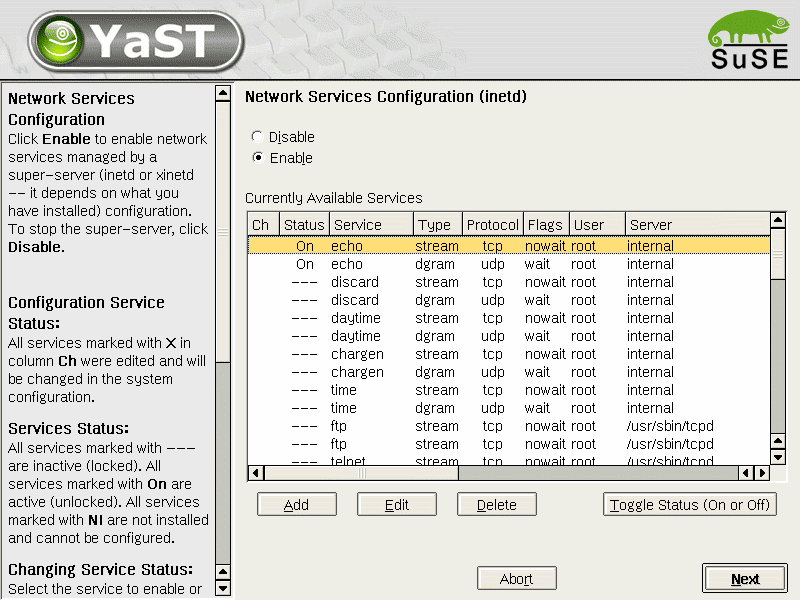
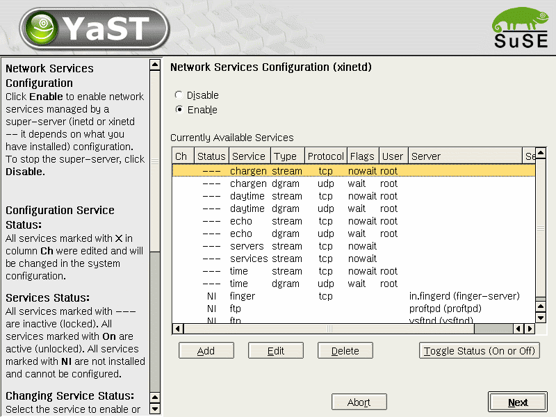
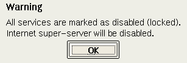

Network Services (inetd) - in autoinstallation mode
$Id$
Martin Vidner
Petr Hadraba
Features
The inetd module in autoinstallation mode allows the user to configure
network services in autoyast YaST2 module.
Workflow
Overview
Individual dialogs







Implementation